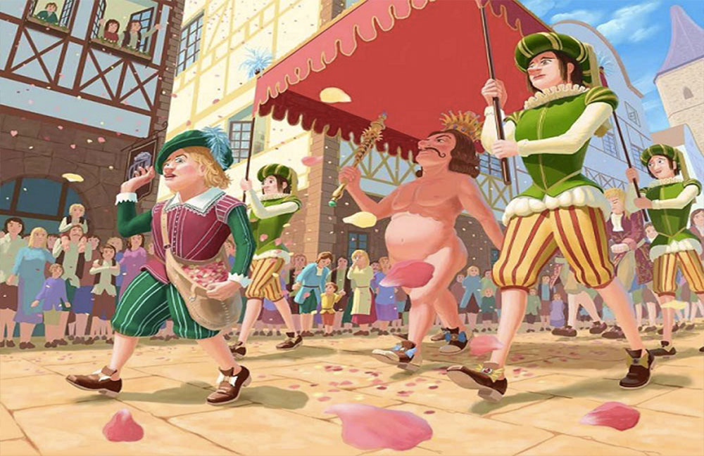

Il re è nudo, viva il re!
In un contesto così particolare e inaspettato come quello della pandemia, oltre a renderci conto di quali sono le vere necessità per mantenere sana la società, le risorse intellettive dei così detti “diversi” tornano a distinguersi per la sensibilità unica con cui non solo vedono il mondo, ma lo decodificano, lo interpretano e soprattutto vedono oltre il presente.
Il problema più grande che ha rilevato la pandemia è l’appropriatezza del sistema mondo a proteggere i propri abitanti. Scarsa prevenzione, scarsa protezione dell’ambiente, scarsa considerazione di chi veramente sostiene il sistema mondo. Eppure qualcuno l’aveva visto al di là dei numeri, al di là della realtà, spingendosi oltre il presente e oltre la prima visione. Eppure non gli abbiamo dato conto.
Curare questi “occhi diversi”, tutelarli e soprattutto offrigli la possibilità di crescere e rafforzarsi penso che faccia parte dei tanti cambiamenti che nel post-COVID come umanità dobbiamo tenere conto, in quanto anche loro “chiave” di un mondo “migliore”.
Il mondo, quello “normale”, è in grado di non sottomettersi agli interessi economici e regole di mercato per tutelare la propria vita? Ma soprattutto ha il coraggio per prendere decisioni del genere? È privo dell’egoismo che lo ha spinto all’epoca COVID dove la sanità pubblica si basa su grandi dirigenti e specializzazioni di eccellenza privando di importanza la prevenzione, la medicina di base e il settore infermieristico?
L’economia del sistema mondo non è un elemento assestante, ne statico o privo di futuro, eppure la visione che ne abbiamo di lui è limitata ai confini nazionali, al tempo di una legislatura e alla filosofia del momento.

Ma il mondo va avanti per la sua strada e nella sua evoluzione continua, non conoscendo il limite geografico di un mercato di una città orientale, ne l’indebolimento immunologico dell’uomo, il cambio delle stagioni e la confusione climatica.
Qualcuno questo l’aveva visto e considerato, e con una naturalezza che in altri sarebbe stato coraggio, lo ha urlato, ma il risultato in molti, troppi casi, è stata inesistente: chi doveva ascoltare e comprendere, vedere quella stessa previsione, non ha dato seguito a quella voce, ha taciuto e tutto è crollato.
Il confronto nell’umanità non è una cosa che si limita a pochi eletti, ma che include chiunque abbia qualcosa da dire, soprattutto se viene da chi vede il mondo con occhi diversi.
Chiara Massotti